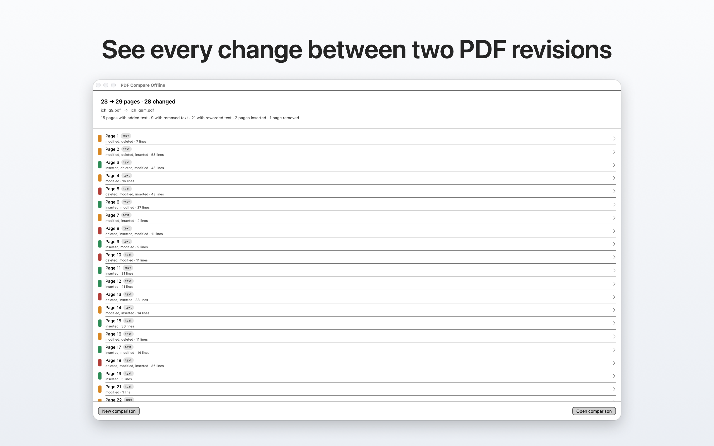
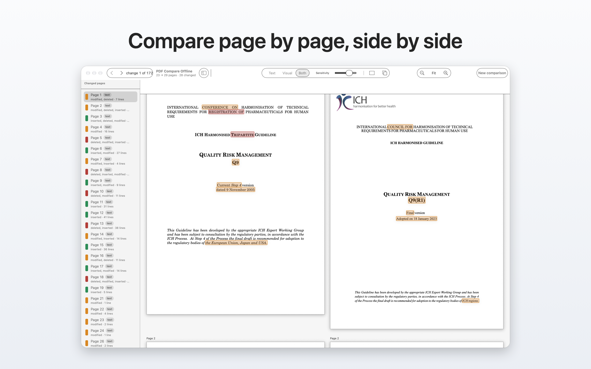
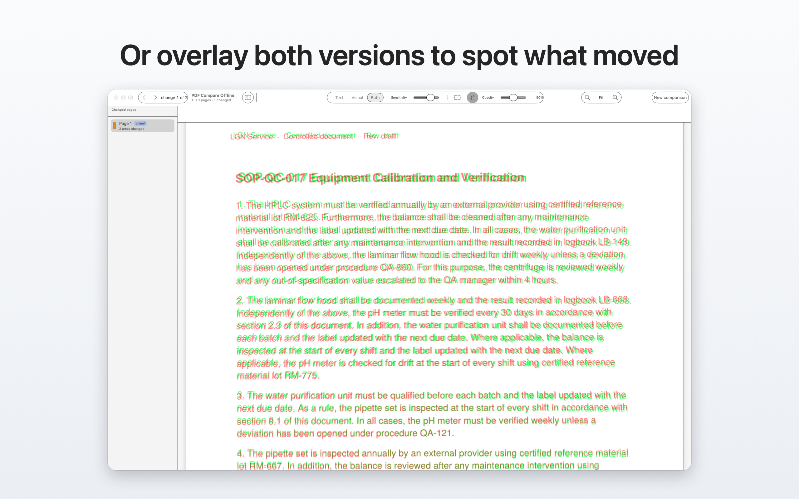

For macOS · document comparison
Two versions.
Every change highlighted.
Open the old revision and the new one: added, removed and rewritten text, inserted or deleted pages. Everything runs on your Mac — the app has no network access at all.
Retention samples shall be kept for at least five years from the date of batch release. Disposal is authorised by the department manager.
Retention samples shall be kept for at least seven years from the date of batch release, under continuously monitored temperature and humidity. Disposal is authorised by QA.
Up to 20 pages — free
The full comparison, every change, no account and no time limit. Most SOPs, contracts and tender replies fit here.
Longer documents — $19.99 once
Free keeps working above 20 pages, showing the first five changed pages. One payment removes the limit for good.
The app, on a real document.
macOS 14 or later · Apple Silicon and Intel

Nothing leaves your Mac.
The app ships without network permissions: it cannot connect, even if you asked it to. No account, no upload, no telemetry. Your documents stay where they are.
Buy it once. It stays yours.
PDF Compare Offline
$19.99
one time · version updates included
- Documents up to 20 pages: free, in full
- Above 20 pages: unlimited unlock
- No subscription, no renewal
Subscription tools
$19.99 / month
that is $719.64 over three years
- Comparison stops when the licence lapses
- Account and cloud services required
- Features you never use, in the price
Adobe Acrobat Pro, the most common monthly plan for PDF comparison, listed at $19.99 per month in September 2026. See the full comparison →
What the comparison shows.
Added text
Word by word, not line by line: exactly what entered the new revision.
Removed text
Deleted passages stay readable in the left column, struck through in red.
Rewritten text
Reworded passages are marked as such, side by side with the original.
Inserted or deleted pages
Alignment accounts for new pages, so shifted numbering never creates false positives.


Try it on the next document you have to check.
Up to 20 pages the comparison is complete and free. Above that, the free version highlights the first five changed pages.